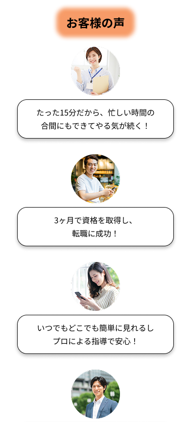
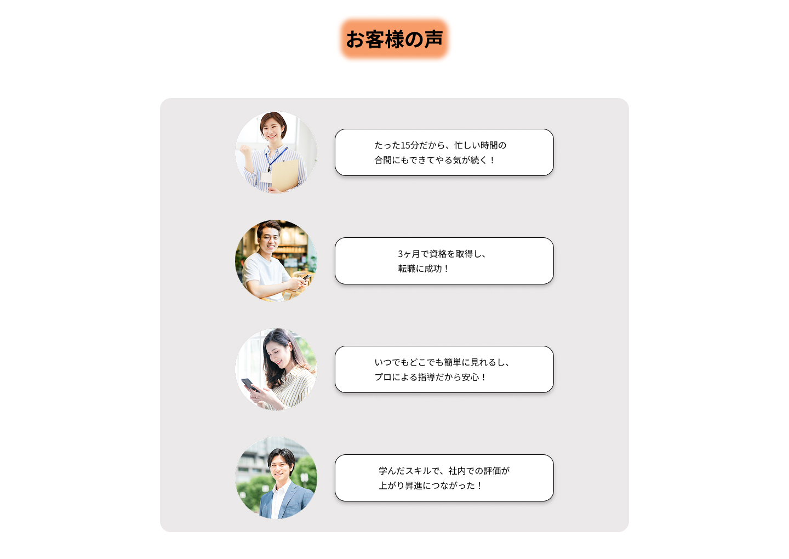

「一人で続けられるか」という不安を抱えるユーザーに対し、実際の「お客様の声」を掲載しました。自分と同じような境遇の人が成果を出していることを示すことで、サービスへの安心感と信頼感を高め、登録への心理的な壁を取り払う工夫をしています。
WORKS 04 SkillSync LP 制作事例
全体図を見るプロジェクト概要
- クライアント
- 架空の動画学習プラットフォーム「SkillSync」
- 制作期間
- 3週間（企画立案・情報設計・デザインカンプ）
- 担当範囲
- 企画立案、ユーザーヒアリング（ペルソナ策定）、情報設計、デザインカンプ制作
- 使用ツール
- Figma, Photoshop
クライアントの課題
1. Webサイトの欠如による集客機会の損失
公式な窓口となるWebサイトがないことで、お店を検索している潜在顧客への情報提供が不足しており、オンラインでの集客基盤が整っていない状態でした。そのため、本来獲得できたはずの集客機会を逃していることが大きな課題でした。
2. 独自の「世界観」や「空気感」を伝える手段の欠如
お店の最大の魅力である「静けさ」や「大人の隠れ家」というブランドイメージを、視覚的に正しく届ける媒体がなく、ターゲット層へお店の価値を十分に伝えきれていませんでした。
制作目標
サービスの魅力を正しく伝え、新規登録への「一歩」を後押しする
動画学習に対して「難しそう」「一人で続けられるかな」と不安を感じているユーザーに、サービスの楽しさや手軽さを直感的に伝えます。「ここなら自分にもできそう」という期待感を持ってもらうことで、新規登録へのハードルを下げ、ユーザー数の拡大を目指します。
デザイン戦略
1. 「信頼感」と「活力」を共存させるカラー設計
メインカラーにシアンを採用することで、オンライン学習サービスとしての「先進性」や「知的なシャープさ」を表現しました。そこへアクセントとしてオレンジを組み合わせることで、サービスを利用することで得られる「一歩踏み出す活力」を視覚的に演出しています。
2. ユーザーの熱量を逃さない「導線（CTA）」の配置
「やってみたい」というユーザーの気持ちをスムーズに登録へと繋げるため、ページ内の適切な箇所にCTAボタンを配置しました。スクロールの手間を省き、迷いなく次のステップへ進めるようにすることで、登録率（コンバージョン率）を高める設計を意識しています。
3. 「共感」を通じた心理的ハードルの払拭
4. 利用シーンを想定したレスポンシブデザイン
移動中やスキマ時間にスマホで情報を探すユーザーを想定し、モバイル版の読みやすさを追求しました。特に「お客様の声」のような長文になりやすい箇所は、小さな画面でも視認性が損なわれないようレイアウトを最適化。PC版ではシャープで活気のある世界観を維持しつつ、デバイスごとの最適な余白設計を行うことで、どの環境でも「学び」への意欲を高めるユーザー体験を提供しています。


プロジェクトの成果
1. 心理的ハードルの払拭と登録意欲の向上
「無料で始められる」という手軽さを強調するだけでなく、実際の受講生の声を通じて「自分にもできそう」「これなら続けられるかも」という確信をユーザーに与えることができました。単なる機能紹介に留まらず、ユーザーの不安に寄り添うことで、新規登録への心理的な壁を取り払いました。
2. サービスへの深い信頼感と安心感の構築
デザイン全体で活気と誠実さを表現したことで、オンライン学習特有の「孤独感」を払拭し、サービスへの信頼感を高めました。ユーザーが「ここなら自分の理想に近づける」と直感的に感じられるような、安心感のあるブランドイメージを形にしました。
プロジェクトから得た学び
ユーザーの心理動線を意識した情報設計
ユーザーが抱く「続けられるだろうか」という不安を、単なるデータではなく「解決すべき心の課題」として捉えることの重要性を学びました。ユーザーの視点に立って、安心感を与える要素（実績や声）を適切なタイミングで配置し、スムーズにボタン（CTA）へと導くためのロジックを実践的に習得しました。